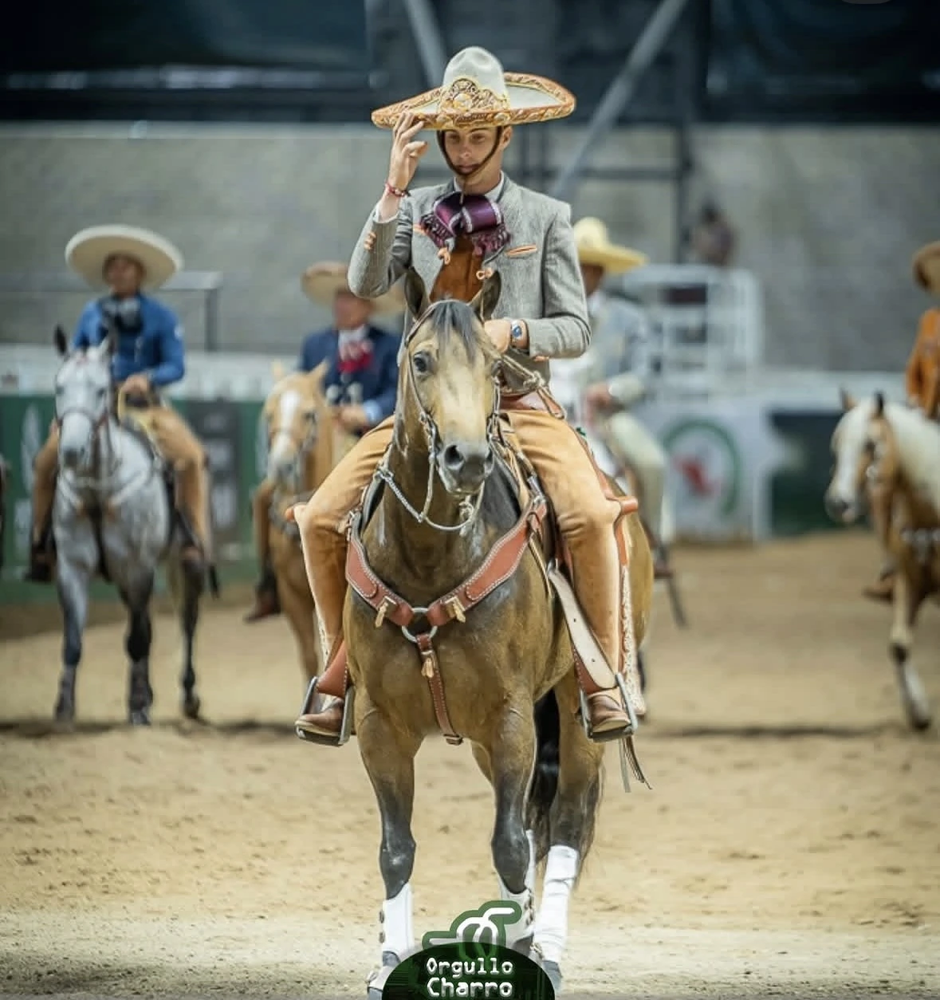

Olaf
Potro de dos años en la publicación de Ale. Hijo de SG Frozen Enterprize y Mischievous Diamonds.
Ver video AC Performance Horses
AC Performance Horses
Rienda charra / Jalisco, México
Entrenador de caballos cuarto de milla en Tepatitlán de Morelos.
Ver caballos en trabajo ↓

El entrenador
Parte del trabajo de Ale se puede seguir desde las primeras montas de un potro hasta su presentación en un caladero.
En su archivo conviven Olaf, de dos años al momento de la grabación, y Bruja 4T, ya en preparación para el Futurity Millonario. Cada video muestra al caballo en una etapa distinta.
Seguir a Ale en InstagramDel archivo de Ale
Potro de dos años en la publicación de Ale. Hijo de SG Frozen Enterprize y Mischievous Diamonds.
Ver videoHija de Ara Brujo y CC Sonitas Valentine. Ale la presenta a pocos días del Futurity Millonario.
Ver videoRancho Los Mezquitez documenta una sesión con Ale. Potro de tres años en el video, hijo de A Vintage Smoke.
Ver videoBitácora de competencia
Tercer lugar compartido en Intermedia, con 46 puntos. Segundo Torneo VIP, Jesús María, Aguascalientes.
Segundo lugar en la eliminatoria Intermedia del Caladero de Excelencia, Ciudad de México. El circuito registró 56 positivos y cuatro de infracción.
Compra y venta
Consulta qué caballos están disponibles y pide un video reciente antes de programar una visita.
Consultar disponibilidadPatrocinadores y colaboraciones
La marca aparece junto a Ale en los videos de Cangrejo y Lapua Is Red.
Ver la publicación con Cangrejo